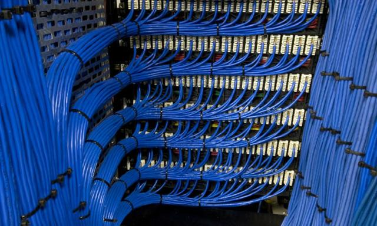
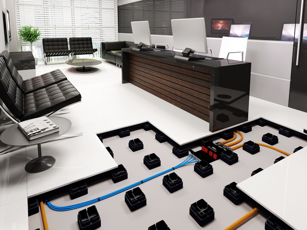

O termo cabeamento estruturado parte do sistema de concentração e instalação onde reúne cabos em um switch ou um hub,
e que possam ser manuseadas de forma rápida e simples, seja em redes domésticas ou em grandes empresas.
Toda essa estrutura é para fornecer um ambiente onde o trabalho realizado com cabeamentos possa ser feito de forma rápida e fácil.
O fato de tentar colocar um novo computador ligado a rede, pode ser uma tarefa que gaste muito tempo, sem a estrutura de cabeamentos e se
houver a falta de uma porta livre no switch.
Como funciona Piso Elevado?
Antes de falar como funciona o piso elevado vamos relembrar do que se trata esse sistema.
O Piso elevado é aplicado quando há a necessidade de elevar um piso a um certo nível determinado, normalmente maior que 7cm acabado.
Isso é muito comum em reformas comerciais de edifícios corporativos, pois as construtoras rebaixam o nível da sua laje já prevendo que os
proprietários irão colocar um piso que facilite a passagem de infra-estruturas de elétrica e redes por baixo, facilitando a adequação das
salas comerciais para diversos tipos de negócios.
Para que o piso elevado funcione corretamente ele deve ser composto por: pedestais (metálicos, pvc ou a composição de ambos) e uma base (por exemplo:
placa de ardósia, placa de porcelanato, placa de ardósia revestida, placa metálica, etc). O objetivo final é ter uma vão entre as placas,
que estão apoiadas nos pedestais, e o contrapiso (piso cru) deixado pela construtora.

Cabeamento estruturado, também conhecido pela sigla KET, é a disciplina que estuda a disposição organizada e padronizada de
conectores e meios de transmissão para redes de informática e telefonia, de modo a tornar a infraestrutura de cabos autônoma quanto
ao tipo de aplicação e de layout, permitindo a ligação a uma rede de: servidores, estações, impressoras, telefones, switches, hubs e
roteadores. O sistema de cabeamento estruturado utiliza o conector RJ45 e o cabo UTP como mídias-padrão para a transmissão de dados,
análogo ao padrão da tomada elétrica que permite a alimentação elétrica de um equipamento independentemente do tipo de aplicação.
História
O cabeamento estruturado remonta às tecnologias de redes dos anos 1980, período em que empresas de telecomunicações e computação, como AT&T, Dec e
IBM criam seus próprios sistemas proprietários de cabeamento.Nos anos 1990, o cabeamento estruturado progride enormemente por meio da introdução do cabo de
par trançado. Nesse sentido, a criação das normas EIA/TIA e ISO ajudam a padronizar cabos, conectores e procedimentos.O conceito de Sistema de Cabeamento
Estruturado se baseia na disposição de uma rede de cabos com integração de serviços de dados e voz que facilmente pode ser redirecionada por caminhos diferentes,
no mesmo complexo de Cabeamento, para prover um caminho de transmissão entre pontos da rede distintos. Um Sistema de Cabeamento Estruturado EIA/TIA-568-B
(norma ANSI/TIA/EIA-568-B[1] e ver a norma brasileira equivalente: NBR 14.565) é formado por seis subsistemas.

É o tipo de piso elevado para áreas internas mais utilizado no mundo. É composto por placas de aço preenchidas no
seu interior com concreto celular leve com dimensões de 60x60 cm apoiadas sobre pedestais com altura que pode variar
de 05 cm a 200 cm de acordo com cada projeto. Pode ser fornecido sem revestimento, permitindo a instalação na obra de
revestimento autoportante (móvel e intercambiável) tais como, carpete em placas e vinílico em placas ou réguas, ou pode ser
fornecido com revestimento de fábrica (não removível), tais como laminado ou vinílico. É o tipo de piso elevado mais
recomendado para escritórios comerciais/corporativos e áreas técnicas como Data Centers, CPDs, Salas de Elétricas e Salas
de Servidores. Tem como vantagem sua alta resistência a cargas verticais, rolantes e de impacto e sua alta durabilidade.
Tem como desvantagem não poder ser utilizado em áreas externas.
Piso elevado ou piso falso
é um tipo de piso, geralmente utilizado em escritórios e áreas técnicas (Data Center, Sala de Elétrica, Sala de Servidores,
Sala de Racks), que eleva o piso de um ambiente, criando um espaço para a instalação de cabos de dados e elétricos e o ar condicionadoou as
tubulações de água gelada para refrigeração. Aceitam a maioria dos acabamentos para piso existentes, como carpete, vinílico e laminado melamínico.
Existe também o Piso Elevado para áreas externas, que podem ser de Granito, Ardósia, Concreto Celular, ou outros acabamentos. Os pisos
elevados em áreas externas tem inúmeras vantagens com relação ao piso assentado sobre laje, são eles: é mais leve, é mais rápido de ser
instalado, permite manutenção da impermeabilização com custo muito reduzido, permite acesso á tubulações e ralos sem ter que quebrar nada, o piso
fica totalmente nivelado pois dispensa caimento para ralos, o paisagismo fica no mesmo nível do piso deixando o ambiente mais amplo e agradável aos olhos.